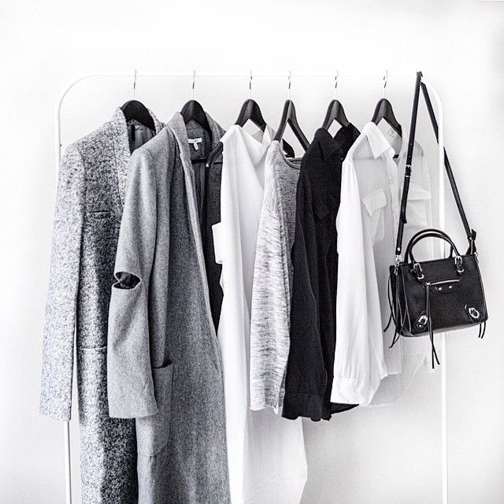

|  |
Wardrobe makeoverI will customize the perfect wardrobe for you by considering your lifestyle, personal style,body shape and your complexion ensuring that you will make smart , better future purchases. Through a wardrobe makeover , I will assist you to convert your current wardrobe into a more sustainable , enhanced one . I will also advise you to mix and match your existing clothes and accessories to create outfits like you've never imagined before. I'm all about educating you on what suits you the best , so that you will have the confidence to make the right clothing choices in the future while still being within your budget. |
Co-ordinating outfitsTo bring out the best version of yourself through the outfits I would have to study your fashion taste , goals , requirements and budget . I will help you understand what styles suits you the best by trying to create new up-to-date outfits . Color co-ordination will also be the key to for an outfit worth of making a statement by keeping your body shape and complexion in mind. I'll also help you with accessorizing to make the outfit shine even more. |
|
Styling for special occasionsLet it be a wedding, gala, awards show, party and big presentations require special attention I'm here to assist you in picking out the perfect outfit which require special attenttion. Whenever you've got something looming on your calendar, we'll establish a plan for outfitting it whether that means styling what you already have or shopping for a few new pieces. We can plan fittings and alterations, expert beauty service (makeup & hairstyle) and even a nail appointment (manicure & pedicure) to make you look fit for the occassion. |
|

|
Personal shoppingCustomers normally choose to have the personal shopping option whenever they have had a Personal Consultation/Wardrobe Makeover. An individual shopping experience will leave you feeling motivated and sure with your new purchases. I will give tips on the best way to spend carefully and keep inside your budget, how to blend things in with your present closet, what to purchase and where to buy from. I will lead you through the shopping experience tranquil while having some fun! |
PhotoshootsI also style models for photoshoots , magazine covers and advertising shoots according to client requirements. I'll be happy to work behind-the-scenes to provide style tips and to pull off the best outfits on the models . I will help the clients bring out the best through latest fashion matching your theme and desired style. |